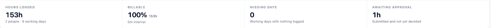
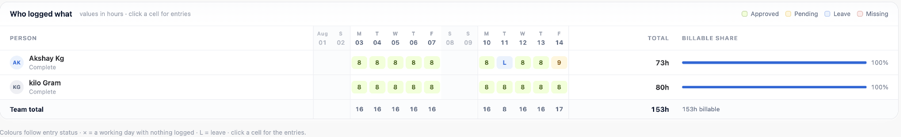
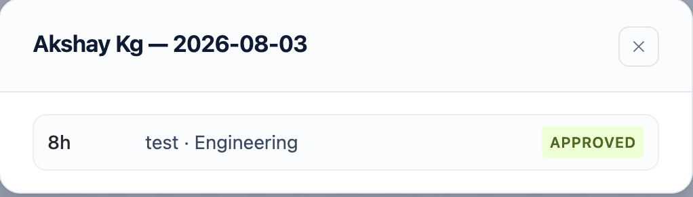
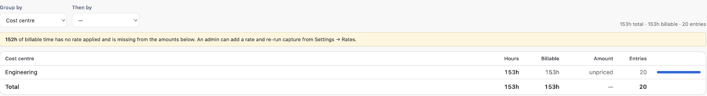

Reports answer *who logged what*, and *where did the time go*. They cover only projects you manage.
1. Who can see reports
A person sees a project in reports if they are a worklog approver or a project administrator for it. Site administrators see everything they can browse.
Asking for a project outside that set does not silently return nothing — it is refused, so a report is never quietly narrower than you think.
2. Choosing a period
Presets for this month, last month and the last 14 days, or set the dates yourself. The project picker collapses to a summary — *3 of 4 projects* — rather than a row of chips, and in the matrix view you can narrow to one person.
3. The four figures
Across the top, four numbers about the period you chose.
| Figure | What it counts |
|---|---|
| Hours logged | Everything except sent-back time, with the change against the previous period of the same length — not the previous calendar month, so a 14-day range compares against 14 days |
| Billable | The billable share of those hours, with the internal remainder named |
| Missing days | Working days already past with nothing logged, across everyone expected to log |
| Awaiting approval | Submitted time still waiting for a decision |
These are counted on the server, not added up from the table below them. The matrix is paged and capped; summing it would quietly understate a wide range. If the table has to truncate, the report says so — and says the four figures are still complete.
Missing days counts people, not rows. Somebody who logged *nothing at all* has no entries, so a figure derived from the table would miss exactly the person it exists to find. The roster is everyone who logged on these projects in the last 90 days, so a person who has gone quiet still appears — with an empty row and a day count against their name.
Time that was sent back is reported in its own right but never counted as logged. Work that has to be redone is not time on the books, and the same rule applies everywhere else in the app.
On sites that approve by the week, time in a week nobody has submitted yet is counted as not yet submitted rather than as awaiting approval — nobody is waiting on it.

4. The team matrix
People down the side, days across the top, hours in the cells. Mondays carry a divider so a month reads as weeks, weekends are tinted, and the person column stays put while the dates scroll.
| Cell | Meaning |
|---|---|
| Green | Approved |
| Amber | Waiting for a decision |
| Blue L | On leave |
| Red × | A working day with nothing logged |
| Empty | A weekend, a public holiday, or a day nobody has reached yet |
Logged time wins over everything else: somebody who worked on a public holiday still worked, and the cell shows the hours.
Each row ends with that person's total and their billable share, and carries a note under the name — *Complete*, or how many days they have not logged.
In weekly mode the colours follow the week's submission state rather than each entry's. An entry inside a week nobody has submitted is not waiting on an approver, and colouring it as pending would send you looking for something that was never sent.

5. Heatmap
Heatmap re-shades the cells by *how much* was logged rather than by status — the view for finding an unevenly loaded fortnight. Press it again to go back to status colours.
6. Drilling into a cell
Click a cell to see the entries behind it — project, cost centre, issue, description and status. This is where you check an unusual number before asking anybody about it.

7. Breakdown by cost centre, project or person
The Breakdown view groups totals over one or two dimensions of your choosing — cost centre, project, person or client. Group by cost centre to see where effort actually went; add a second dimension to split it further.

The largest hundred groups are shown; narrow the dates or projects to see the rest.
8. Unpriced billable time
If billing is configured, the breakdown warns when billable work carries no rate. That figure is the difference between *we billed nothing* and *nobody set a price* — and the two look identical on a report that does not say.
Anyone who can see the report sees this warning, whether or not they can see money. Hours that are not being billed are an hours-level fact.
9. Amounts, and who can see them
Amounts appear only for billing administrators. For everyone else the money columns are absent, not zeroed — an approver reading the report cannot tell what anybody bills at, because the figures were never sent to their browser.
Where several currencies are present, totals are shown per currency. There is deliberately no combined total: adding dollars to euros produces a perfectly ordinary-looking number that means nothing.
10. Exports
The matrix exports to Excel or CSV. The columns follow what the server sent you, so an export never contains a column you were not allowed to see on screen.
Both files are generated in your browser. Nothing is uploaded anywhere to produce them.
A printable PDF of one person's timesheet is a separate thing, produced from a project's own page in Jira rather than from here.